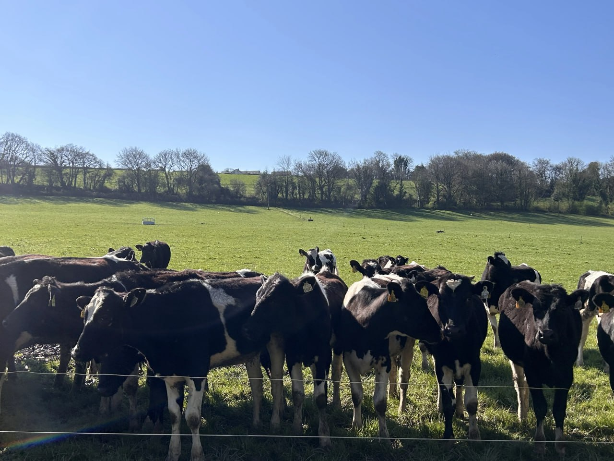
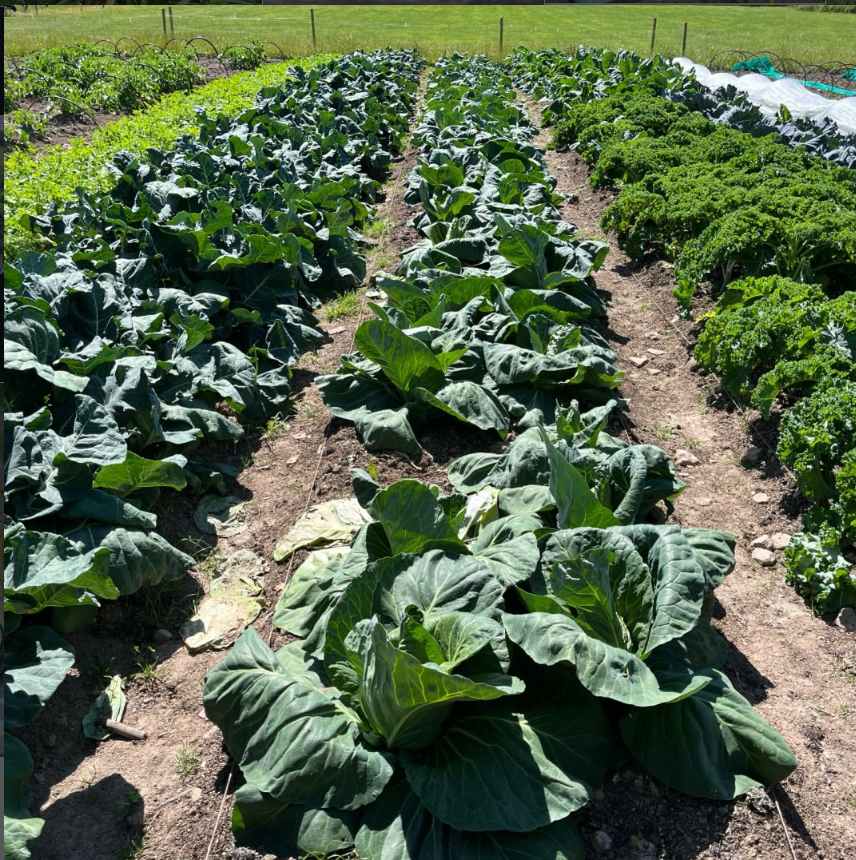
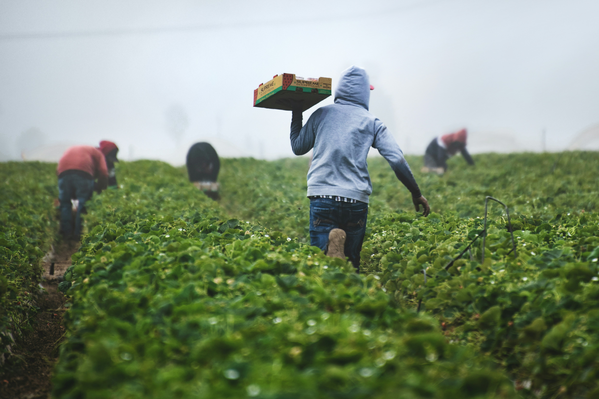

Long Supply Chain
Your food travels thousands of miles before reaching your table, losing freshness and connection to its source.

Join 200 households building a resilient, community-owned farm in Cork. Share the harvest, share the responsibility, and reconnect with the land that feeds us.
But together, we can build something better.
Your food travels thousands of miles before reaching your table, losing freshness and connection to its source.
Industrial farming prioritizes profit over flavor, nutrition, and the traditional knowledge of growing food.
We've become strangers to the soil that sustains us, losing the relationships between people, place, and food.
Three simple steps to join our food community
Purchase a share to become a member-owner. Your investment supports the farm and gives you access to fresh, seasonal produce.
During the growing season, pay a simple weekly fee. No contracts, no hidden costs—just transparent support for your local farm.
Pick up your weekly box of fresh vegetables, grown with care by your community. Know your farmer, know your food.
Join a supportive community where everyone contributes and learns
Basic tools available on site. Bring gloves and enthusiasm—we provide everything else.
Seasonal activities, often weekends. Planting, harvesting, and community gatherings.
Flexible involvement during the growing season. Come when you can, contribute as you are able.
Beginners welcome, community support provided. Learn together, grow together.


When you join our CSA, you're not just buying vegetables. You're becoming part of a movement to rebuild our food culture from the ground up.
Together, we share the responsibility of growing food, the joy of harvest celebrations, and the security of knowing exactly where our meals come from.
This is about sustainability, resilience, and reconnecting with the rhythms of the seasons—and with each other.
See Community EventsReal people sharing their journey to Bushy Park Farm

I spent years working in an office with no connection to where my food came from. Joining Bushy Park Farm changed that. Now I spend my weekends outdoors, learning, growing, and actually enjoying the process. It's become something I truly look forward to.

I wanted my kids to understand what real food is. Being part of the farm gave us that opportunity. We cook together using what we harvest, and it completely changed how we see food.
After moving to a new area, I didn't know many people. The farm gave me more than just food—it gave me a community. Now I actually feel connected to the people around me.
Join us in creating a more transparent, sustainable, and community-driven way to grow and share food. The future of farming is local, and it starts with you.
Apply To Join